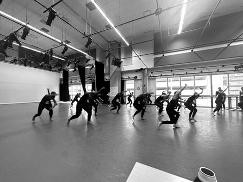

Essays on dance, technology, embodied knowledge, and the politics of movement.
LATEST TRANSMISSIONS
JANUARY 2026FILM / RESEARCH18 min read
Refusal as Research: Notes from Asylum Time, and How The Ten Poem Project Became an Award-Winning Film
This autoethnographic article introduces refusal as a research method developed through twelve years of asylum-pending life in the United States. Drawing on Audra Simpson, Édouard Glissant, Tina Campt, and Saidiya Hartman, I articulate how refusal became a methodology that protects the inner record from extraction while generating creative work.
READ TRANSMISSION
JANUARY 2026TECHNIQUE12 min read

Confluence Dance Technique: Naming a Living Practice When the Names Are Already Taken
A rigorous training practice for dancers living inside shifting vocabularies and shifting definitions of legitimacy. It treats dance as steps and as intelligence, developing multirhythmic skill, repertoire fluency, and cultural responsibility through embodied research.
Naming a Living Practice When the Names Are Already Taken — Multirhythm, Repertoire, and Embodied Research in Dance Diffusion
12 min read
JANUARY 2026SINCLAIR EMOGHENE
CONFLUENCE DANCE TECHNIQUE — UT AUSTIN, 2025
Confluence Dance Technique is a rigorous training practice for dancers living inside shifting vocabularies and shifting definitions of legitimacy. It treats dance as steps and as intelligence, developing multirhythmic skill, repertoire fluency, and cultural responsibility through embodied research into how dances travel and transform. A method, not a marketing category.
I have been struggling with the words modern dance and contemporary dance, not because I do not understand their histories, but because their meanings have become unstable in everyday use. Modern dance often refers to a specific American lineage built by early pioneers and later formalized through techniques, institutions, and aesthetic schools. Contemporary dance, meanwhile, is used in several different ways at once: as a concert dance category, as a commercial studio genre that blends jazz, ballet, and modern influences, and as a global catch-all for dance happening now. That multivalence creates a problem. The term sounds familiar, but it does not reliably tell you what is happening in the room.
The label becomes a gate before the class even begins.
The naming problem becomes even sharper when the label "African dance" enters the space. In many contexts, the word African arrives carrying assumptions that flatten diversity into a single category, even when the speaker intends the opposite. "African dance" can unintentionally produce an exclusive-club effect, drawing some people in while signaling to others that they are outside of the conversation. It can also reduce the work to a narrow identity container, positioning the teacher as a specialist who cannot move across creative boundaries. The label becomes a gate before the class even begins.
I tried to move sideways into "contemporary Africa," but that phrase has also been reshaped by music and television industries into a commercial fusion aesthetic that does not match what I teach or practice. The result is an exhausting drift between conventions, market meanings, and academic canons. The vocabulary starts to force me to explain what I am not before I can name what I am.
So I want a different approach to naming. A term that describes a method without staking out genre territory. A practice that can be defined clearly, taught responsibly, and understood by a broad audience without being mistaken for something else.
What I teach is a technique and research environment built from traditions and movement logics that shaped me, and it extends outward through study into wider questions of how dances travel, transform, and persist across communities. I do not treat political borders as the best container for movement knowledge. My teaching is about diffusion, proximity, encounter, transformation, and survival. It is also about strength, timing, articulation, musical intelligence, and presence. I treat dance as steps, yes, but also as human intelligence.
The question is not simply, "What is this dance called?" The deeper question is: what does this practice do, and what does it train a dancer to become?
What the Practice Is, in Plain Terms
My technique class is built as layered training:
The body as instrument — dynamic alignment, stamina, coordination, articulation, mobility, and power.
Rhythm as intelligence — timing, pulse, phrasing, repetition as deep learning, and the relationship between movement and sound.
Repertoire as knowledge — learning dances as embodied archives, with attention to origins, social function, and cultural logics.
Improvisation as literacy — learning how movement generates choices, how bodies respond to music and to one another, and how style is carried through principles rather than surface imitation.
Context as responsibility — investigating how dances live across human societies, from classical to traditional, from social to contemporary performance, and how power shapes what is seen, valued, and credited.
The goal is to train dancers who are not only physically capable, but also intellectually awake and ethically attentive. Dancers who can perform with clarity and joy, and who can also ask better questions about what they are doing, where it comes from, and what it means to move across lineages.
Why Confluence Fits, and What It Risks
A working term I am considering is Confluence Dance Technique.
Confluence names how dances actually operate in the world. Dances do not stay inside political boundaries. They move with people. They spread through migration, labor, trade, war, education, religion, popular culture, and social celebration. They influence one another through proximity and encounter. They evolve through repetition and remix. Confluence captures diffusion without pretending that a nation-state is the most accurate container for movement knowledge.
Movement may be permeable, but power often is not.
But I also want to name what is potentially naive about confluence as an idea, because dance is rarely a neutral space. Confluence can sound like a welcoming, accept-all-forms philosophy. In perception, that can feel generous and expansive. In practice, dance spaces often reproduce asymmetrical power structures. They can center particular bodies, aesthetics, and lineages while pushing others to the margins. They can reward familiarity with dominant vocabularies and treat other ways of moving as raw material rather than knowledge. This is one of the foundational tensions inside the confluence concept: movement may be permeable, but power often is not.
For me, that tension is not a reason to abandon confluence. It is precisely why confluence is useful, because it gives us language for acknowledging dance as interpellative and permeable. By interpellative, I mean that dance "calls" bodies into relation and identity. It recruits, marks, persuades, disciplines, and invites. In Louis Althusser's formulation, interpellation describes how ideologies "hail" individuals into subject positions, often making those positions feel natural.¹ Dance does something similar: it hails the dancer into a relationship with a history, a community, an idea of virtuosity, and an idea of belonging. That calling can be liberatory, but it can also be coercive, depending on who controls the space and what is rewarded.
Naming confluence makes our conversations about dance fluidity more constructive, rather than dissolving into an everything-goes mentality. Confluence is not permission to flatten difference. It is a demand to study how difference travels, how it is absorbed, how it is resisted, and how it is transformed.
Why Multirhythm Matters More Than Polyrhythm
Rhythm has often been used as a marker that filters bodies into categories of "us" and "them." Who "has rhythm," who does not. Who is a cultural insider, who is not. These judgments can become segregation language. They can reproduce racial essentialism, including the lazy claim that Black people can dance and white people cannot. They can also exclude disabled, neurodivergent, and differently trained bodies by treating variation in timing, coordination, or response as deficiency rather than difference.
Multirhythm names rhythmic intelligence as plural and learnable. It frames rhythm as an ecology rather than a test.
I choose multirhythm deliberately. Multirhythm names rhythmic intelligence as plural and learnable. It frames rhythm as an ecology rather than a test. It acknowledges that bodies arrive with different capacities, histories, sensory relationships, and cultural mappings of time, and that technique can meet dancers where they are while still demanding rigor. Multirhythm does not weaken the work. It clarifies the work. It signals that this practice trains dancers to develop complex timing relationships without turning rhythm into a gatekeeping tool or a myth about who belongs.
This distinction matters for what Confluence Dance Technique promises. The practice is rigorous. It asks for precision, stamina, and deep listening. But it refuses the old sorting languages that decided in advance which bodies could access that rigor and which could not.
Confluence and the Contact Zone Problem
I often place confluence adjacent to ideas like contact zones, collision metaphors, and frameworks of cross-cultural encounter that try to describe what happens when cultures meet. Mary Louise Pratt famously defines contact zones as social spaces where cultures meet, clash, and grapple with each other, often in contexts of highly asymmetrical relations of power.² This concept is valuable because it refuses romantic stories of exchange. It keeps conflict, inequality, extraction, and negotiation visible.
But some models of cultural encounter can also decapitate dance by treating it like an object that transfers cleanly from one bounded culture to another, or by imagining bodies as billiard balls that collide and then bounce away unchanged. Those models can be useful for naming appropriation and constraint. But they can also overemphasize restriction, boundaries, and marked zones, until the body becomes monitored rather than responsive, contained rather than creative.
Confluence insists on something simpler and more honest: dance has survived precisely because bodies adapt. Dancers absorb, translate, recompose, and produce. They learn through repetition, relation, and need. Confluence is not an escape from critique. It is a way to hold critique together with the reality that movement is relational by nature.
So when I say Confluence Dance Technique, I am not describing a utopia where all dances mix equally. I am naming a training practice that prepares dancers to recognize both realities at once: the permeability of movement and the politics of the spaces that movement enters.
What Confluence Dance Technique Means in the Classroom
If Confluence Dance Technique is going to be more than a beautiful phrase, it needs a definition that can be repeated consistently.
Confluence Dance Technique is a rigorous training method that develops multirhythmic intelligence, grounded articulation, repertoire fluency, and cultural-historical literacy by studying how dance forms travel, transform, and sustain knowledge through bodies in relation.
That definition makes a promise. The class is distinct from "African dance" as a narrowing label, from commercial "contemporary," and from abstract surveys of everything. It is a technique practice with a research ethic.
How This Shows Up in Class
Conditioning and craft (strength, stamina, alignment, precision)
Multirhythm study (pulse, phrasing, layered timing, responsiveness)
Repertoire as embodied archive (repetition as deep learning)
Improvisation as culturally shaped problem-solving and relational decision-making
Context and responsibility (origins, social function, ethical questions of circulation)
This is where the term confluence becomes a pedagogical tool. It opens the field into a larger question: what other ways does dance live that we have not yet investigated? Dance on stages, yes, and also dance in rituals, social spaces, nightlife, streets, churches, ceremonies, classrooms, and the everyday. Confluence invites dancers to treat those spaces as sites where technique, knowledge, and innovation are constantly being produced, equal to any concert stage.
Toward a Consistent Lexicon
Maybe the answer is not one perfect label. Maybe the answer is a label plus a definition that stays consistent every time it is used.
But the need is real, because names shape expectations. Names shape legitimacy. Names shape whether students enter the room ready to learn, or ready to misinterpret.
If Confluence Dance Technique is the term, then the task is to hold it to its standard: everything is structured, and structure includes power, history, and responsibility. Multirhythm reinforces that commitment by refusing the old sorting languages while still insisting on technical development.
And if the term evolves, the mission stays the same: to train dancers who are physically strong, multirhythmically sophisticated, culturally literate, and creatively expansive. Dancers who can move through the twenty-first century not just with skill, but with intelligence.
If Confluence Dance Technique works as a name, it is because it refuses to solve the naming problem by flattening difference. It keeps the difficulty visible. Dance travels, yes, but it does not travel evenly. Bodies absorb, yes, but institutions sort. This practice trains inside those tensions with clarity and responsibility rather than pretending they disappear.
I am continuing to refine this lexicon in public because language shapes what becomes possible in the studio. If you are a dancer, teacher, choreographer, or curious witness who has felt the confusion of inherited labels, I hope this offers a usable alternative: a method you can recognize in the body rather than a category to defend. Confluence is the invitation. The work is the training.
NOTES
Louis Althusser, "Ideology and Ideological State Apparatuses (Notes Toward an Investigation)," in Lenin and Philosophy and Other Essays, trans. Ben Brewster (New York: Monthly Review Press, 1971).
Mary Louise Pratt, Imperial Eyes: Travel Writing and Transculturation (London: Routledge, 1992).
RECOMMENDED READING
Louis Althusser, "Ideology and Ideological State Apparatuses"
Mary Louise Pratt, Imperial Eyes: Travel Writing and Transculturation
Diana Taylor, The Archive and the Repertoire: Performing Cultural Memory in the Americas
Brenda Dixon Gottschild, Digging the Africanist Presence in American Performance
Paul Gilroy, The Black Atlantic: Modernity and Double Consciousness
SHARE THIS TRANSMISSION
JOIN THE CONFLUENCE
Responses, questions, provocations. This is an open conversation about naming, method, and the politics of dance practice.
Notes from Asylum Time, and How The Ten Poem Project Became a Book and an Award-Winning Short Film
18 min read
JANUARY 2026SINCLAIR EMOGHENE
ROOTED IN MOTION — CANADA SHORTS FILM FESTIVAL GRAND PRIZE 2025
Abstract
This autoethnographic article introduces refusal as a research method developed through twelve years of asylum-pending life in the United States. Drawing on Audra Simpson's theorization of refusal as an alternative to recognition, Édouard Glissant's right to opacity, Tina Campt's attention to quotidian practices of refusal, and Saidiya Hartman's ethics of narrative restraint, I articulate how refusal became a methodology that protects the inner record from extraction while generating creative work. The article documents the development of The Ten Poem Project, an autoethnographic dance film and forthcoming book that emerged from the conditions of migration, queer survival, and prolonged legal uncertainty.
This article is about refusal as a research method.
I have been doing house cleaning lately, and when I clean I think a lot about my past, my life in Nigeria, and the conditions that pushed me into migration. Today, my life is great. It has turned out better than I expected. I came to the U.S. to study, and during that time I found out that I could not return home. The Nigerian government passed laws to criminalize people of the LGBTQIA+ community. I was terrified. I applied for asylum to remain in the U.S. This decision came out of the necessity to survive. It was not easy to cope, but I made it through. The assimilation process has been difficult. I have been through a lot. I have been abused. I have been relegated to the margins. And with that has come a rebirth of myself. A new person.
In this article, I resist the urge to tell another immigrant story of look where I came from and look where I am now. That is not how I am feeling. I am still feeling the bitterness and hurt from a lifetime of abuse, physical and mental manipulations that have caused a lot of violence in my life. These pains have been the only way that I know myself and who I have become. Leaving any of that behind and pretending to be a new man sounds like hypocrisy to me. I do not feel like a new man, and I do not forget what was done to me. This is why I have adopted the notion of refusal as a research method. I am grateful for all that I have and have become. Yes. But I am refusing to tell my story for extraction, to entertain people and make others feel good about themselves, or to convince them that the conditions made me better. I am here today in spite of all that has happened to me. What follows is the account of why refusal became necessary, what it produced, and what it is still producing.
Theoretical Framework
The concept of refusal I employ here is indebted to several scholars who have theorized alternative relationships to visibility, legibility, and recognition. Audra Simpson's Mohawk Interruptus: Political Life Across the Borders of Settler States (2014) articulates refusal as a political stance that rejects the terms of recognition offered by dominant structures. Simpson's "ethnographic refusal" acknowledges "the asymmetrical power relations that inform the research and writing about... lives and politics" and refuses to write in ways that compromise sovereignty or safety.
Édouard Glissant's demand for the "right to opacity" in Poetics of Relation (1990) provides another foundation for this work. Glissant argues that opacity "is not enclosure within an impenetrable autarchy but subsistence within an irreducible singularity." This right to remain partially unknowable, to refuse full transparency, is central to my methodology.
Tina Campt's Listening to Images (2017) offers a method for attending to "quotidian practices of refusal" in photographs of Black diasporic subjects. Campt hears in these images "a quiet intensity" and "the low hum of resistance and subversion." Her attention to what she calls "the grammar of Black feminist futurity" informs my understanding of how the body can hold and transmit knowledge that resists extraction.
Saidiya Hartman's "Venus in Two Acts" (2008) articulates the ethical stakes of narrative when writing about lives marked by violence. Hartman grapples with how to "tell a story... without committing further violence in my own act of narration." Her concept of "narrative restraint" as "the refusal to fill in the gaps and provide closure" speaks directly to my practice.
Asylum Time
I wrote an early version of this manuscript on October 29, 2024, one week before the U.S. general election. Some people treat an election like an argument. Something you debate, something you win or lose, then you move on. For me, an election can feel like weather. It does not have to touch you directly to change how you sleep. You start checking the windows. You start planning for the kind of day you might wake up into.
In 2016, when Donald Trump took office, I had applied for asylum about five months earlier. I still had the hope that many people have when they first enter a system. You think an application is a beginning. You think a beginning leads to a middle, then an end. You think time moves forward like that. A friend messaged me on Facebook asking if Trump's new law affected me. I contacted my lawyers in Washington, D.C. They told me I might not be directly impacted, but delays were likely. That one word, likely, became a structure. A roof. A room. Something you live under.
Waiting is not neutral. Waiting changes a person.
For years, I renewed my employment authorization carefully. I was terrified of making a mistake that could cost me everything. I paid taxes. I worked. I taught. I built a career. I made art. I did all the things that look like life from the outside. Inside, I lived in a kind of confinement that is hard to explain without people trying to clean it up. You cannot vote, and you learn to keep your opinions quiet. You do not want attention. You do not want the wrong kind of visibility. You do not want to be misunderstood by a system that already treats you like a file number. You learn to be careful in a way that enters your body.
What matters here is not the events. It is what the events did to my nervous system. My body accumulated trauma. I fell in and out of depressions. I became lonely in a way that was not just social. It was institutional. I began to feel that nobody was coming. I began to fear that I would die in darkness. Prolonged uncertainty can make the future feel like a disappearing concept. Calls from home became complicated. Sometimes I could not access joy even when I wanted it. I felt suspicious, and I hated that I felt suspicious. I started noticing how easily an immigrant is expected to perform gratitude as payment for protection.
Where Refusal Begins
That is where refusal begins for me. Refusal begins as a boundary you build when you realize that your life keeps getting converted into something else for other people. I refuse to turn my life into public comfort. I refuse to flatten my story into a clean arc that makes the reader feel safe. I refuse to write my pain as entertainment. I refuse to write my survival as an inspirational package. I refuse to become evidence on demand. I refuse to perform gratitude as if gratitude is the price of being allowed to live.
Refusal does not mean I am silent or ungrateful. It means I choose the terms of the record. Refusal is how I stay human inside a system that can reduce you to paperwork. Refusal is also how the art becomes research.
The moment you are an immigrant, people feel entitled to your explanation. They want to know where you are from, what happened to you, how bad it was, how you escaped, how you healed. They want the before and after. They want the transformation. They want closure. Asylum time is not shaped like closure. It is shaped like repetition, delay, relapse, panic, calm, then panic again. Some days you feel safe and grateful. Some days you feel like a ghost. Some days you feel like a tree that has survived too many seasons and is not sure it has more seasons left. This refusal is the only way I know to record this without being taken from myself.
I have told my story many times to whoever was interested in listening. Every time I tell my stories, I feel emptier than before. Within my struggle in assimilating into the society, feeling deeply depressed, angry and lost, telling my story meant I would deal with anxiety for the rest of the month, even years. Asking myself, "did they like what I was saying? Did I suck all the air out of the room by taking up time to talk non-stop?" For months I would continue to beat myself up. Then I stumbled on the word "extraction." Something I never thought was a thing. But here I was, living a life that simply entertained people, angered people, or gave them perceptions of me that really was more of a mirage than anything else.
Extraction is what happens when people take your lived experience and do not take responsibility for the cost of it.
I define this "extraction" as a process where you give, and get nothing in return. Extraction is what happens when people take your lived experience and do not take responsibility for the cost of it. Your pain becomes useful to someone else. You do not become safer. A story is demanded from you, then consumed, then left behind. The immigrant is asked to be legible, clean, and teachable. It is a strange thing to live through trauma and then be asked to summarize it neatly. A clean summary can become a lie. The events may be true, but the shape is false. I use my method of refusal to interrupt that transaction.
Why This Refusal Was Necessary for Me
I decided to remain in the U.S. on asylum because of my sexuality. I did not come thinking I would stay permanently. I came for education. Then the Nigerian government criminalized gay people, and my life pivoted abruptly. I had to decide what it meant to survive. I used to believe my sexuality was minimal, like it was something I could keep quiet and therefore be safe. However, legality does not care how quietly you live. Once criminalization becomes law, the world reorganizes itself around danger. Your body begins to behave like danger is everywhere, and rightfully so, given the Nigerian environment I had grown up in.
That shift did not remain in paperwork. It entered my mind, my mood, my relationships. I became mentally depressed. Angry at small irritations. I lashed out at people who cared about me. I lost friendships in the early years because I did not know how to carry what I was carrying. Over time, I struggled to keep relationships, to make lasting connections, to access help in the ways people talk about as if help is always accessible. I began to believe there was no one coming. That belief is its own kind of injury. Life as an immigrant is tough. Life as a lonely immigrant is on another level.
So I became an artist in the way some people become religious. It was the only place I could still be whole. Art is where I make sense of the world around me. Art is how I survive this world. My art is not a trophy. It is not phenomenal for people's gaze. It is not for approval. It is like a tree in a forest. It goes through seasons. It survives winter. It survives fire. One day it will fall. All I ask is that my roots run deep enough to hold me until due course, until something new can grow. This is the emotional ground of The Ten Poem Project.
The Ten Poems: A Record, Not a Timeline
This short film and what I plan to become a book in the future, contains poems from my migrational journey. I use the word journey to mean the ways I have migrated across space and time. Journey here does not mean to literally travel even when that happens within this context of migrating to a new world. Here, it means internal migration. How the self moves across fear, suspicion, gratitude, rage, tenderness, numbness, and the rare moments when the body briefly believes it might be safe.
To regain a sense of "place" and to retain my sense of "self," I defaulted to an old practice of writing poetry, which I adopted early on. Finding myself locked in this immigration cul-de-sac, I began to write poems. In the book, I include these poems. The poems are not written in a tidy sequence because my life was not experienced in a tidy sequence. Some days felt like progress. Some days felt like regression. Some days felt like returning to the same room with different lighting. That is why the structure is unstable. That instability is not a failure of craft. It is accuracy. Refusal is the reason the poems do not behave like chapters in a conventional memoir. If I forced them into linearity, the work would become easier to consume. It would also become easier to misunderstand. Refusal makes the poems stay close to the truth of asylum time.
As I developed my academic career, I developed research that looked into documenting dance as a living archive. When I say living archive, I mean something simple. A record of conditions, not just events. A record of what prolonged waiting does to the body. A record of how memory reorganizes itself under stress. A record of how fear returns. A record of how hope flickers. A record of how a person becomes suspicious of joy. A record of how love becomes complicated. The poems hold this kind of record. They do not only tell what happened. They hold what it felt like to live through it. That is why I call this work research. I built a method for recording reality without betraying the person inside it.
As poetry took a hold of me and helped me to create a safe space, I began to develop my writing into abstraction. It was a way for me to get away from the murky and stuffy room that I have been confined in for so long in my asylum waiting years. If I abstract my experiences, I thought, I would better understand them as something distant and far from me. But little did I know that abstraction is not me trying to be mysterious. Abstraction is protection and precision at the same time. Sometimes direct explanation is unsafe. Sometimes it is extractable. Sometimes it forces you to perform your pain clearly so that another person can feel moved by it. Abstraction lets me speak without being taken. It lets the work hold the truth without turning me into a public exhibit. It is also how dance enters the project as a real language.
The Film as a Parallel Universe
The Ten Poem Project is accompanied by a short dance film: Rooted in Motion. The work took shape over a decade of living in the United States with an asylum case pending. During those years, I wrote poems, recorded audio notes, and kept private observations as I moved through migration, queer survival, displacement, and the long work of learning how to live inside a new society. The film is not based on the poems in a simple way. It runs alongside them. It is another way of recording.
My dance training ranges from Nigerian traditional dance to ballroom and Latin social dance to contemporary African dance. The movement in the film is culled from these lineages. The point is not to display culture. The point is to show what it looks like when a body is carrying too much, and still moving.
FESTIVAL RECOGNITION
Canada Shorts Film Festival Grand Prize 2025
Best Documentary
Best International Short
Best Experimental Film
Best Director
Best Cinematography
Best Score
LGBTQ+ Toronto & Los Angeles Film Festival (Official Selection)
SHORT to the Point - Dance Film Category
Versatility Dance Festival
ATX Short Film Showcase (Honorable Mention)
My migration is not only legal. It is also artistic. Before the U.S., dance was already survival for me. I trained myself while training others. I taught children during the day, rehearsed at night, and lived inside exhaustion. I tried to build a company with limited resources. I learned what it means to dream while broke. I learned what it means to be seen as a failure while you are doing everything you can to live.
I helped choreograph a major Nigerian dance film. That success brought pressure, and pressure brought collapse. Collapse brought the question that returns again and again in the immigrant body: what do I do now, and where do I go now. I pursued an MFA in the U.S. after being told I was not brilliant enough to be admitted anywhere abroad. I was admitted, with support, and that moment did not solve my life, but it opened a door.
In the U.S., I created works that were not just performances. They were records: Gray (2013), Nyam Chiem (NightMare) (2015), ROAMS (2016), Kaleidoscope of Tuts (2020, Kennedy Center). These are not random titles in a CV. They are milestones in how my body learned to speak under pressure. The Ten Poem Project emerges from this longer reality. It is dance, language, memory, and survival braided together.
The significance of the film is that it turns a life condition into an authored method. A decade of asylum-pending life is usually treated as background, or reduced to trauma material. Here, it becomes structured practice: poems, audio logs, movement scores, screenplay drafts, and a film language that can hold time, uncertainty, waiting, and adaptation without flattening any of it. The film shows how writing becomes movement, and how movement becomes evidence. The edit is treated like choreography, and the camera is treated like a collaborator. It is a record of queer migrant survival that refuses simplification. The project holds complexity: joy and fear, belonging and estrangement, intimacy and public risk. It does not ask for pity. It makes form, and that is power.
What This Article is Doing
This article is not meant to summarize my life. It is meant to name the method that has been holding the work together. Refusal is that method. Refusal is how I keep the record without being extracted. Refusal is how I protect the inner life of the immigrant, the artist, the gay body, the asylum body, from being converted into something easy. Refusal is also what finally gives me a structure for the book.
If refusal is the spine, then each part of the book can be designed as a boundary. A human boundary. The book will move through asylum time as a condition. It will hold the ten poems alongside short narratives about when each was written, what triggered it, what time of day it arrived, what it felt like in the body. It will document how Rooted in Motion holds what language cannot hold. It will trace the earlier works, the Nigerian company years, the U.S. training, the performances, the teaching, and the moments where dance kept me alive. And it will turn toward the research horizon: why dance matters beyond performance, why movement deserves serious preservation, and why I believe a world that takes dance seriously can rethink politics, culture, religion, science and technology.
That last part is not a sudden pivot. It is the continuation of the same refusal. The absence of African dance in global archives is also an extraction problem. The repeated demand for legible immigrant narratives is also an archive problem. The body is not just a body. It is a knowing system. I am writing this book to keep that knowledge intact. To keep it intact.
REFERENCES
Campt, Tina M. Listening to Images. Durham: Duke University Press, 2017.
Glissant, Édouard. Poetics of Relation. Translated by Betsy Wing. Ann Arbor: University of Michigan Press, 1997.
Hartman, Saidiya. "Venus in Two Acts." Small Axe 12, no. 2 (2008): 1-14.
Simpson, Audra. Mohawk Interruptus: Political Life Across the Borders of Settler States. Durham: Duke University Press, 2014.
SHARE THIS TRANSMISSION
JOIN THE CONFLUENCE
Responses, questions, provocations. This is an open conversation about refusal, method, and the politics of narrative.
RECEIVE TRANSMISSIONS
Essays on dance, embodied knowledge, and the circulation of movement. Delivered when there is something worth saying.